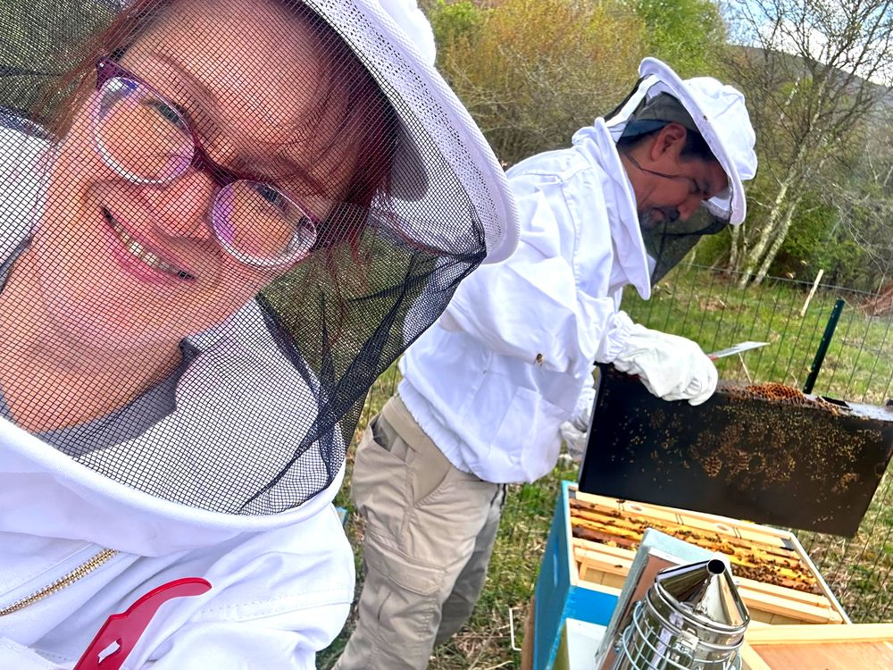

About me
Hi, I’m Yana, a learning strategist based in Northern Virginia.
01Who I am
I help technology companies make complex products easier to understand, adopt, and use. I started out teaching university students, moved into federal training, and spent the last seven years shaping learning strategy at Appian.
The settings changed, but my favorite part never did: the moment something complicated finally clicks for someone. That’s why I see learning as more than content. It’s getting the right knowledge to people at the right time, bringing it into the product itself, and building education that scales with the business.
The best learning doesn’t feel like training. It feels like the product makes sense.

02Off the clock
Off the clock, I’m a hobbyist beekeeper. A healthy hive is a lot like a good learning program: many small parts, working together.
03Recommendations from colleagues
From the very beginning of my time at Appian, Yanina was a mentor to me. She is one of the most detail-oriented people I’ve worked with, and she holds an incredibly high bar for excellence, which she consistently meets.
Yanina turns research into action, and when one path closes, she finds another. I recommend her to any team that needs an instructional designer who goes beyond developing learning content to help drive customer enablement.
Yana took the initiative early in the DevCon planning stages to develop a comprehensive social media marketing strategy. The depth of her research was critical to the plan’s success, helping us promote DevCon more effectively than ever before.
Yana is a sharp, creative strategist who took the initiative to rethink our content approach. Her strategy became a powerful go-to-market tool, generating over 52K views on her ‘What Is Appian?’ campaign alone.
Yana immediately brought incredible clarity and structure with her meticulously organized project plan and timeline. Her dedication and natural leadership were invaluable.